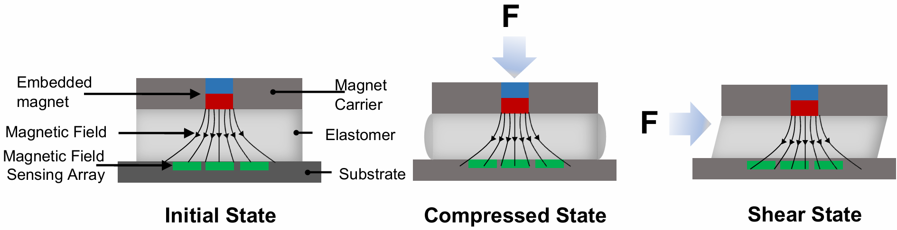
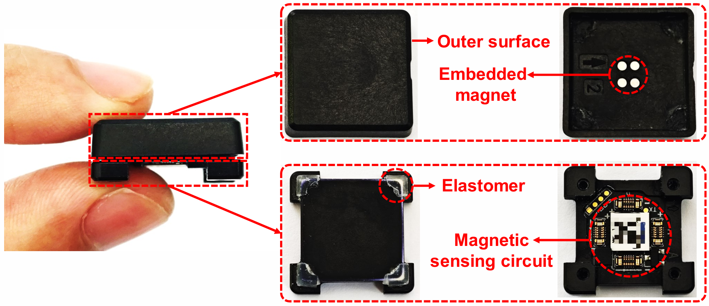

Crushing
Negative normal-force injection delays the grasping threshold. The gripper continues squeezing and damages the object.
Hijacking Robotic Tactile Systems with Deploy-and-forget Tags
A thin, battery-free magnetic tag. A false sense of touch. Exploring the physical-layer security of robotic tactile perception.

A study of magnetic tactile sensing, physical signal spoofing, and its consequences for closed-loop robotic control.
Explore the attack overviewTactile perception is crucial for precise robotic manipulation, providing an important foundation for dexterous, closed-loop force control. Among various tactile sensing techniques, magnetic tactile sensors stand out thanks to their fine-grained, three-dimensional force perception capability and strong robustness against visual occlusion.
In this study, we discover a physical loophole called PhantomTac in magnetic tactile sensors. The attacker can alter the magnetic field, thus spoofing the force interpreted by magnetic tactile sensors. The attacker can stealthily deploy such an attack by simply attaching a thin (the thickness is around 0.5 mm), battery-free magnetic tag to the surface of an object. Hence, the attack tag can be easily concealed by a barcode sticker. Such an attack scheme is “deploy-and-forget” — the attacker can deploy the tag and leave. When a robotic hand is picking up an object, it may severely damage the object. Specifically, spoofing the normal force can crush the object, whereas spoofing the shear force can lead to a loose grip, thus dropping the object. Compared with directly sabotaging the robotic hand, PhantomTac is much more concealed as the attacker does not need access to the device.
We performed extensive reverse-engineering efforts to characterize the sensing mechanism of commercial-off-the-shelf tactile sensors and proposed a practical tag design. End-to-end evaluations conducted on real robots and robotic arms demonstrate that our attack can bypass existing anti-interference mechanisms and effectively hijack their closed-loop control processes, achieving an attack success rate exceeding 95% when the grasping-position offset is bounded within 8 mm. Finally, based on the limitations of existing anti-magnetic interference mechanisms, we propose a multimodal-consistency defense mechanism to mitigate such physical-layer security threats.
Magnetic tactile sensors infer contact forces from the movement of an embedded magnet inside a deformable elastomer.


External pressure deforms the elastomer under compression, bending, or shear. The resulting change in the magnet’s position and pose alters the local magnetic-field distribution.
The sensor maps these magnetic signals to contact location, normal force, shear force, and slip. An external magnetic perturbation can therefore affect the force it reports.
Video unavailable. Download the video to watch it locally.
Physical contact with a PaXini PX6AX-GEN3-MC-M2020-Elite produces real-time force readings along multiple axes, shown alongside the sensor in this demonstration.
Recorded sensor response · 21 seconds
PhantomTac perturbs the field around a tactile sensor, introducing false feedback into closed-loop manipulation.
The passive magnetic tag can be concealed beneath a familiar sticker. Its magnetic array alters tactile feedback when a robotic hand interacts with the tagged object.
The deployment video shows the camouflage surface, magnet-array surface, side profile, and the tag attached to an object.
Video unavailable. Download the video to watch it locally.
Tag construction and deployment · 34 seconds
Negative normal-force injection delays the grasping threshold. The gripper continues squeezing and damages the object.
Positive normal-force injection reaches the threshold too early. An insufficiently secured object is dropped.
Negative normal-force injection delays collision detection. Sustained pushing causes the vase to topple.
Positive normal-force injection triggers premature contact detection, preventing the subsequent task.
Compare benign operation with positive and negative normal-force injection on two robotic platforms.
Video unavailable. Download the video to watch it locally.
Without PhantomTac, the robotic arm grasps and transports the object normally.
Video unavailable. Download the video to watch it locally.
With PhantomTac, the reported force reaches the threshold before the object is firmly grasped.
Video unavailable. Download the video to watch it locally.
With PhantomTac, the reported force delays the stopping threshold while the gripper continues squeezing.
Video unavailable. Download the video to watch it locally.
Without PhantomTac, the robot detects contact with the vase and retracts normally.
Video unavailable. Download the video to watch it locally.
With PhantomTac, the robot perceives contact prematurely and cannot complete the subsequent task.
Video unavailable. Download the video to watch it locally.
With PhantomTac, contact detection is delayed and the robot continues pushing against the vase.
Experimental measurements and the original scripts for force-field modeling, evaluation, and visualization.
8 datasets · Python modeling scripts · MATLAB visualization
Fit the spatial force model and export serialized model files.
Random holdout evaluation with score, MAE, and RMSE.
Visualize Fx, Fy, and Fz at a selected height.
Plot slices through the measured three-dimensional force field.
sensor_data_3mm_S.xlsx and sensor_data_2.5mm_S.xlsx for fitting; sensor_data_3mm.xlsx and sensor_data_2.5mm.xlsx for blind testing. The MATLAB script expects Sensor reverse engineering data_3mm.xlsx. Place the copies in the directory from which you run the corresponding script.ultimate_rbf_engine_3mm.pkl and ultimate_rbf_engine_2.5mm.pkl. The contour script loads the 3 mm model from the working directory and plots the default slice at Z = 0.2 mm. The blind-test script separately fits and evaluates models over 1,000 random splits and exports PDF charts.Affected sensors, physical consequences, and potential defenses.
We evaluated products from two mainstream magnetic tactile sensor vendors, including XELA uSPa 46 and PaXini PX6AX-GEN3-MC-M2020-Elite, PX6AX-GEN3-IP-S1610-Elite, and PX6AX-GEN3-DP-S2015-Elite. All tested sensors are vulnerable to PhantomTac attacks.
PhantomTac may introduce a slight protrusion because it deploys small magnets. In theory, existing visual inspection systems could detect such protrusions. However, deploying such a visual inspection system would be extremely costly.
PhantomTac can inject both normal and shear forces into magnetic tactile sensors, thereby hijacking tactile-feedback-based closed-loop force control in robots or robotic arms. This prevents the system from accurately interpreting contact forces and can lead to object damage. For example, the robot may continuously apply excessive pressure and crush the object, or it may start transporting the object before achieving a stable grasp, causing the object to be dropped and damaged.
A basic defense is to cross-check tactile readings with independent robot proprioceptive signals, such as joint torques, gripper motor currents, end-effector motion, and gripper velocity. Real contact should cause consistent changes across these signals. If the tactile sensor reports contact without corresponding motion or load changes, the system can flag it as false contact. Conversely, if proprioceptive signals indicate contact while tactile readings remain low, the system can stop further force increase or enter a safe recovery mode.
ACM SIGSAC Conference on Computer and Communications Security
November 15–19, 2026 · The Hague, Netherlands
Binbin Zhang, Yifeng Zhang, Xiaomeng Chen, and Dongyao Chen. 2026. PhantomTac: Hijacking Robotic Tactile Systems with Deploy-and-forget Tags. In Proceedings of the 2026 ACM SIGSAC Conference on Computer and Communications Security (CCS ’26). ACM, New York, NY, USA, 15 pages.
DOI: 10.1145/3830454.3846657@inproceedings{zhang2026phantomtac,
author = {Binbin Zhang and Yifeng Zhang and Xiaomeng Chen and Dongyao Chen},
title = {{PhantomTac}: Hijacking Robotic Tactile Systems with Deploy-and-forget Tags},
booktitle = {Proceedings of the 2026 ACM SIGSAC Conference on Computer and Communications Security},
series = {CCS '26},
year = {2026},
publisher = {Association for Computing Machinery},
address = {New York, NY, USA},
location = {The Hague, Netherlands},
numpages = {15},
doi = {10.1145/3830454.3846657},
url = {https://doi.org/10.1145/3830454.3846657}
}